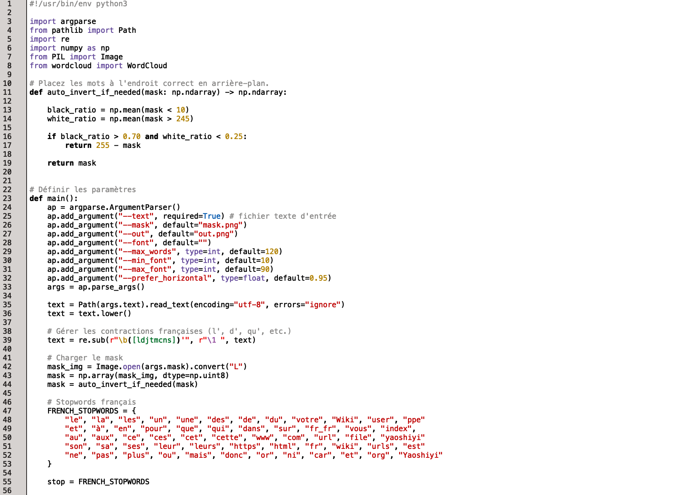
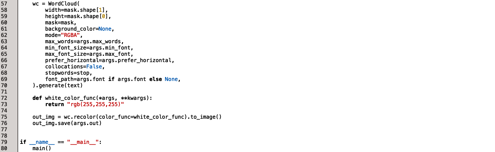
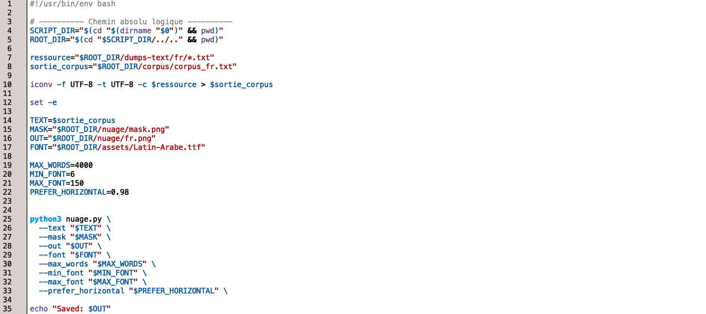

Explication : Script bash qui produit un tableau récapitulatif de l’analyse lexicale du mot « xanh » en vietnamien à partir d’une liste d’URL. Pour chaque URL, le script télécharge la page web, extrait le texte brut, compte les occurrences du mot « xanh », génère des contextes et un concordancier, le tout regroupé dans un tableau HTML.


Explication : Ce script Python a pour objectif de visualiser les résultats d’une analyse lexicale sous forme de nuage de mots. À partir de fichiers textuels produits en amont (par exemple des dumps ou des contextes), il extrait les mots pertinents, calcule leur fréquence d’apparition et les représente graphiquement. Le nuage de mots permet ainsi de voir rapidement quels termes sont les plus présents dans le corpus étudié. Le script lit les données textuelles, nettoie le contenu (suppression des caractères inutiles, des mots vides ou trop fréquents), puis associe à chaque mot un poids proportionnel à sa fréquence. Ces informations sont ensuite utilisées pour générer une image dans laquelle la taille des mots reflète leur importance dans le corpus. Plus un mot apparaît souvent, plus il est affiché en grand.

Explication : Ce script Bash sert à préparer un corpus textuel et à lancer la génération d’un nuage de mots en français. Il fait le lien entre les fichiers de texte produits lors de l’analyse des pages web et le script Python chargé de créer la visualisation finale.